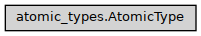

AtomicType
- class ase2sprkkr.sprkkr.atomic_types.AtomicType(symbol, atomic_number=None, n_core=None, n_valence=None, n_semicore=None, n_electrons=None)[source]
Atomic type represent a type of atom, that could be placed at the atomic site.
It can be either a real chemical element, or vacuum pseudoelement. It also determine the number of electrons and valence electrons.
Class hierarchy
Constructor
- __init__(symbol, atomic_number=None, n_core=None, n_valence=None, n_semicore=None, n_electrons=None)[source]
- Parameters
symbol (str or int) – Chemical symbol, e.g. Fe, N, …. If int is given, attempt to guess the symbol using third party library is done
atomic_number (int) – Atomic number If it’s zero, an attempt to guess it from the chemical symbol is done.
n_core (int) – Number of core electrons If it’s zero, an attempt to guess it from the chemical symbol/atomic number is done.
n_valence (int) – Number of valence electrons If it’s zero, an attempt to guess it from the chemical symbol/atomic_number is done.
n_semicore (int) – Number of semicore electrons If it’s zero, an attempt to guess it from the chemical symbol/atomic_number is done.
n_electrons (int) –
- _mendeleev_module = None
- property mendeleev
- property atomic_number
- property symbol
- property n_electrons
- property n_valence
- property n_core
- property n_semicore